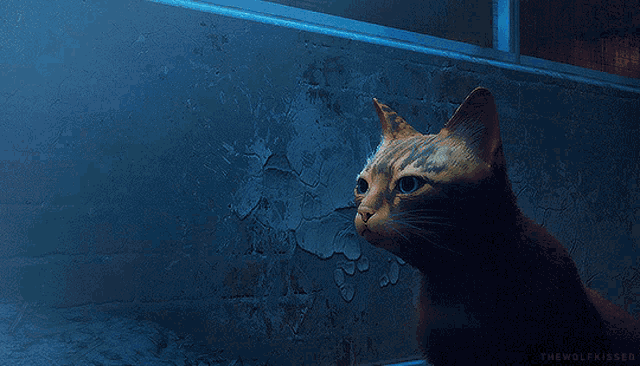

Amante del Agua y los animales listo para lo que se necesite
Elios Hiram
Martínez Sánchez
Desarrollador Web · Java Full Stack
Construyo interfaces claras y sistemas backend sólidos — del boceto en Figma al código en producción, cuidando cada detalle en el camino.
// memorias-b12.
Memorias desbloqueadas
Mi camino hacia el desarrollo empezó por resolver problemas reales, no por seguir una fórmula. Pasé por un bootcamp intensivo de formación Full Stack donde aprendí a pensar como programador: descomponer problemas, escribir código legible y trabajar con control de versiones como parte natural del flujo de trabajo. Hoy combino ese entrenamiento con una base sólida en Java para construir tanto la cara visible de una aplicación como la lógica que la sostiene por debajo.

-
MEM_01
memoria recuperada: primeros pasos en la ciudad del código
Primeros pasos autodidactas en HTML, CSS y lógica de programación.
-
MEM_02
memoria recuperada: bootcamp Full Stack — fundamentos sólidos
JavaScript, Bootstrap, control de versiones con Git/GitHub y buenas prácticas de código.
-
MEM_03
memoria recuperada: especialización en Java
Programación orientada a objetos, estructuras de datos y lógica de backend.
-
MEM_04
señal activa: construyendo proyectos Full Stack reales
Aplicando diseño en Figma, maquetado responsivo y lógica en Java a proyectos propios.
// proyectos.json
Proyectos

// habilidades.yml
Stack & herramientas
Frontend
- HTML5
- CSS3
- JavaScript
- Bootstrap
Backend
- Java
- Programación orientada a objetos
- Estructuras de datos
Herramientas
- Git & GitHub
- Figma
- VS Code
// contacto.md
Hablemos
¿Tienes un proyecto en mente o una vacante disponible? Escríbeme, respondo rápido.
mjmtzshz@gmail.com📍 Monterrey, México